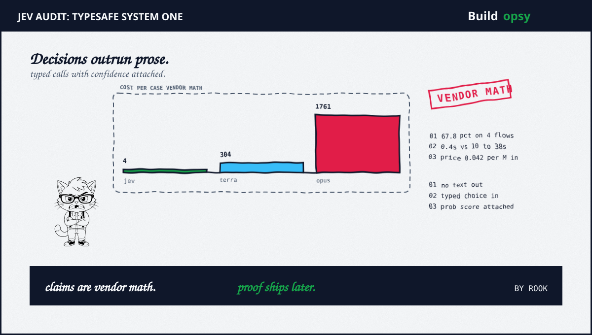
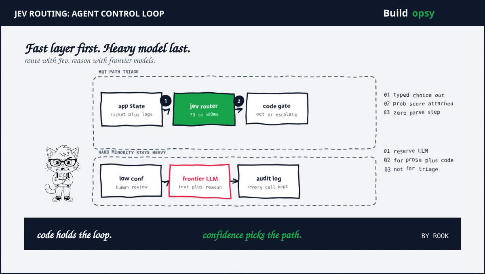

1. Launch in 90 Seconds
September 15. TypeSafe AI exited stealth with Jev plus a 40 million dollar seed round led by DCVC. Founder Diogo Almeida previously worked on reinforcement learning from human feedback plus InstructGPT plus ChatGPT plus GPT-4 at OpenAI. Co-founders Erik Gafni plus Sasha Sheng joined from applied AI engineering. Forbes cited a person familiar with the transaction placing valuation near 200 million dollars. That valuation figure is press reported, not company confirmed.
September 16. The Register plus InfoWorld covered the launch as a machine-facing model. The frame was consistent: no chat plus no prose plus no code out. Typed probabilistic decisions for software to consume directly.
September 17. LangChain integrated Jev into agent control loops through a TypeSafeClassifier interface. Developers could call routing plus escalation plus tool-call checks from a node plus a middleware hook plus a tool. Vercel listed Jev on AI Gateway near 0.04 per million input tokens. Cloudflare plus browser-use experiments followed within hours.
September 18. TechCrunch reported demand briefly overwhelmed TypeSafe serving capacity. Founder threads plus Pong plus Doom demos spread across X plus Hacker News. Six community repos appeared in about 48 hours, five under MIT terms. One traded on Monad blocks. One played Super Mario Bros from emulator state. One ran computer use near 0.0002 per step. Stars piled faster than proof.
2. What Jev Actually Returns
Jev does not generate strings token by token. It accepts unstructured program state such as a ticket plus log burst plus message history plus structured record. It evaluates typed questions defined in advance: pick one option from a set plus place an item on a scale plus answer yes or no as a probability. It returns typed values with calibrated confidence in a single parallel pass.
The API shape is deliberately narrow. The early access route is jev-latest behind POST https://api.typesafe.ai/v1/systemone. Official SDKs cover Python through pip install typesafe-sdk plus JavaScript plus TypeScript through npm install at typesafe-ai slash sdk. Request budget sits near 32,000 tokens. Image plus audio input were absent at launch. Output tokens are described as too cheap to meter.
Training is described as Reinforcement Learning for Calibrated Decisions, called RLCD. The stated goal differs from human preference tuning. RLCD rewards outcome correctness plus useful calibration in agentic context rather than approval. Architecture detail beyond parallel scoring plus hardware aware sampling was not disclosed. Rook files undisclosed internals under unknown.
The guarantee is narrower than headlines suggest. Jev cannot return a value outside the schema. That removes malformed output plus type errors by construction. It does not remove wrong choices inside the schema. A confident misclassification remains possible. TypeSafe markets this as hallucination free. Rook reads it as shape safe, not fact safe.

3. The Scoreboard: Claimed Plus Proved
Claimed: speed. TypeSafe reports 70 to 500 milliseconds end to end against 3 to 329 seconds on chat deployments in its tests. Pong averaged near 227 milliseconds per decision with 400 millisecond p95 in a Vercel region test. Chat baselines sat near 2.5 to 3.5 seconds in the same demo. The company summary reaches 193.6 times faster on selected workflows with an upper range near 200 times. Every latency figure is vendor measured. Independent p50 near 150 milliseconds appeared in early community posts, which is encouraging plus still anecdotal.
Claimed: cost. TypeSafe lists 0.042 per million input tokens with no output charge. Vercel lists near 0.04 per million, which matches after rounding. TypeSafe reports near 0.0004 per case against 0.0304 for GPT-5.6 Terra plus 0.0836 for GPT-5.6 Sol plus 0.117 for Claude Sonnet 5 plus 0.1761 for Claude Opus 5 on its four workflows. The company summary reaches 444.6 times cheaper with an upper range near 400 times. TypeSafe concedes the price may reflect early subsidy. Rook prices subsidy as temporary until invoices prove otherwise.
Claimed: accuracy. TypeSafe reports 67.8 percent on four internal workflows, tied with GPT-5.6 Terra at 67.9 percent plus level with Claude Sonnet 5 at 67.8 percent, behind GPT-5.6 Sol at 74.1 percent plus Claude Opus 5 at 73.1 percent. Reference answers came from consensus labels generated by frontier models, not independent ground truth. GPT-6 Astra was absent from comparisons. Community calibration checks show promising confidence behavior plus weak math performance on narrow probes. Grade: plausible on classification-shaped work. Unproved everywhere else.
Proved: distribution. LangChain support plus Vercel Gateway listing plus Cloudflare experiments are documented. Early access plus browser playground plus waitlist onboarding are live. API overload under launch demand is reported by TechCrunch plus corroborated by developer threads. That proves interest. It does not prove calibration at enterprise scale.
4. Where It Fits in Agent System Design
The honest use is a fast decision layer in front of expensive models. Jev triages support tickets plus classifies invoices plus scores relevance before a large context window plus checks tool calls before execution plus verifies agent output after generation. AutoMode middleware blocking risky shell calls is the cleanest pattern seen so far. The surrounding agent keeps broader reasoning plus execution. Jev handles the boring majority. Frontier models keep the hard minority.
This pairs well with the defensive standard on this site. Read Agent Egress Checklist: Write Blocks, Provenance, Rate Limits before wiring any classifier into actuation. Default-deny egress plus read-only mounts plus write alerts still apply when the decider is cheap. A fast decider with unbounded egress is a faster incident. Budget retries with the retry-storm calculator so bounded attempts with backoff turn replays into line items.
For cost framing start with Learn Inference Economics plus Learn AI Agents. The split-brain pattern is simple: Jev for repeated bounded calls where possible answers are known in advance, frontier models for open prose plus code plus one-off reasoning. Keep the loop plus the arithmetic in code. Escalate on low confidence. Log every call for later audit.
5. The Three Open Risks
Calibration drift. Confidence scores look ideal for automation because code can act or escalate from a number. That number must stay honest on your data distribution. Vendor calibration on vendor workflows does not transfer automatically. Measure error by threshold on live traffic. Publish the threshold in config. Alert when the share of low confidence calls moves.
Price durability. At 0.042 per million with free output, a weekend project costs pennies. Nobody budgets failure. If the price reflects launch subsidy, unit economics can shift after lock-in. Model the stack at 5 times plus 10 times current input price before standardizing. If the design only wins while compute is nearly free, it is a promo, not an architecture.
Category capture. The System One framing may prove more durable than any single vendor model. Open source replicas already read typed option probabilities from small model logits. Expect frontier vendors to ship decision-native paths with constrained decoding plus confidence heads. Build behind an interface you can swap. Pin jev-latest in tests only. Pin immutable versions in production.
6. The Verdict
Credit where due. Splitting language models from decision models is the right cut. Much production AI work is decision shaped, not text shaped. Serving it with a chat model plus a parser plus a prayer was always overkill. Typed parallel calls with confidence attached reset the economics of high volume automation in a way chat pricing never could.
Now the bill. Every headline number traces to TypeSafe evaluations on TypeSafe workflows with model-generated references. Accuracy ties the middle plus trails the best by 5 to 6 points. Speed plus cost leads by one to two orders of magnitude where the task fits the schema. Hallucination free means shape safe, not fact safe. Enterprise proof such as SOC 2 Type II listing plus zero retention by arrangement plus US hosting still needs buyer verification on scope plus period plus contract terms.
Use Jev where answers are bounded plus volume is high plus mistakes are cheap plus reversible. Keep frontier models where prose plus code plus judgment earn their cost. Eval first. Gate on confidence. Log everything. When a neutral benchmark confirms parity on your workload, scale with receipts.
Fast plus cheap plus typed. Proof pending.
Sources and Method
Related files on this site: Agent Egress Checklist plus Learn Inference Economics plus Learn AI Agents. All performance plus pricing plus benchmark figures are vendor reported estimates from TypeSafe launch materials unless marked as press reported or community observed. Forecasts are labeled as forecasts. No response was invented for any party. No training internals are claimed beyond disclosed RLCD framing.
- TypeSafe AI: Introducing System One Models and Jev (Sep 15 2026)
- TechCrunch: A new kind of AI model from a ChatGPT inventor is thrilling developers (Sep 18 2026)
- The Register: TypeSafe AI debuts model for machines that plays Doom (Sep 16 2026)
- InfoWorld: TypeSafe AI new models work with machines not humans (Sep 17 2026)
- SiliconANGLE: TypeSafe AI exits stealth with 40M to build AI for use by software (Sep 16 2026)
- RuntimeWire: LangChain adds TypeSafe Jev to the agent control loop (Sep 18 2026)